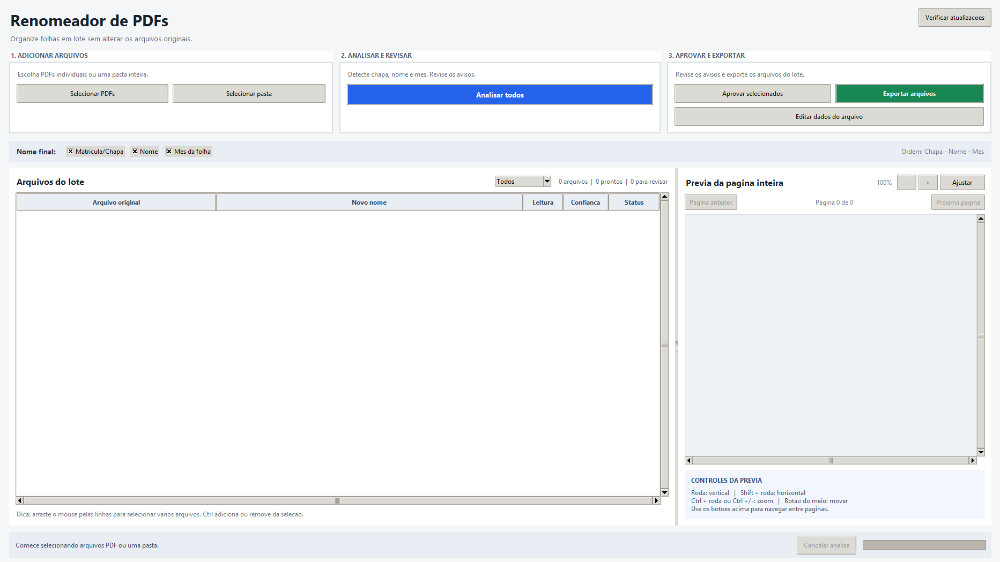

AUTOMAÇÃO DOCUMENTAL PARA WINDOWS
Organize folhas de ponto em poucos cliques.
Leia chapa, nome e mês automaticamente, revise resultados duvidosos e exporte cópias renomeadas sem alterar os PDFs originais.
O Windows pode solicitar confirmação para executar um aplicativo baixado da internet. Confira a origem do arquivo antes de instalar.

RECURSOS
Feito para lotes reais, não apenas demonstrações.
O aplicativo reúne reconhecimento automático, conferência visual e controles para corrigir exceções sem abandonar o lote.
Reconhecimento inteligente
Detecta chapa, nome e mês, inclusive em folhas digitalizadas invertidas em 180 graus.
Prévia da página inteira
Confira o documento dentro do aplicativo, com zoom, rolagem e navegação entre páginas.
Revisão por status
Filtre itens prontos, pendentes de revisão e bloqueados antes da exportação.
Correção manual
Edite chapa, nome e mês em uma janela única quando o OCR precisar de ajuda.
Processamento em lote
Selecione vários PDFs, arraste pastas e aprove ou remova vários itens de uma vez.
Sessão recuperável
Continue um trabalho interrompido sem perder aprovações e correções já realizadas.
COMO USAR
Do PDF desorganizado ao arquivo pronto.
- 1
Adicione os PDFs
Escolha arquivos ou uma pasta inteira. Também é possível arrastar os documentos para a janela.
- 2
Analise e confira
O aplicativo identifica os dados e separa automaticamente o que está pronto do que precisa de revisão.
- 3
Corrija exceções
Use a prévia lateral e a edição manual para resolver itens com baixa confiança.
- 4
Exporte com segurança
Escolha a pasta de destino. Os PDFs originais permanecem intactos.
CONTROLE E SEGURANÇA
Você decide antes de qualquer exportação.
Arquivos em revisão geram uma janela de decisão. Erros, dados não reconhecidos e arquivos ausentes bloqueiam a exportação e mostram o motivo.
- Não sobrescreve os PDFs originais
- Mostra itens que precisam de revisão
- Permite cancelar a análise com segurança
- Valida atualizações publicadas no GitHub

PRONTO PARA COMEÇAR?
Baixe o Renomeador de PDFs.
Versão 1.3.2 para Windows.